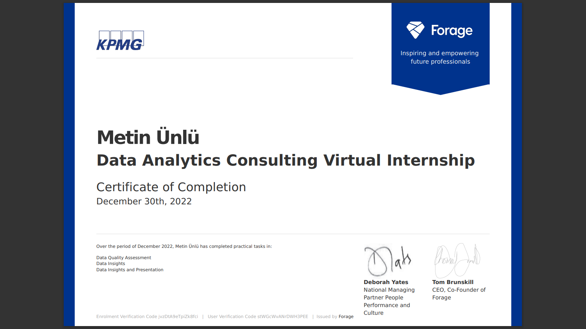
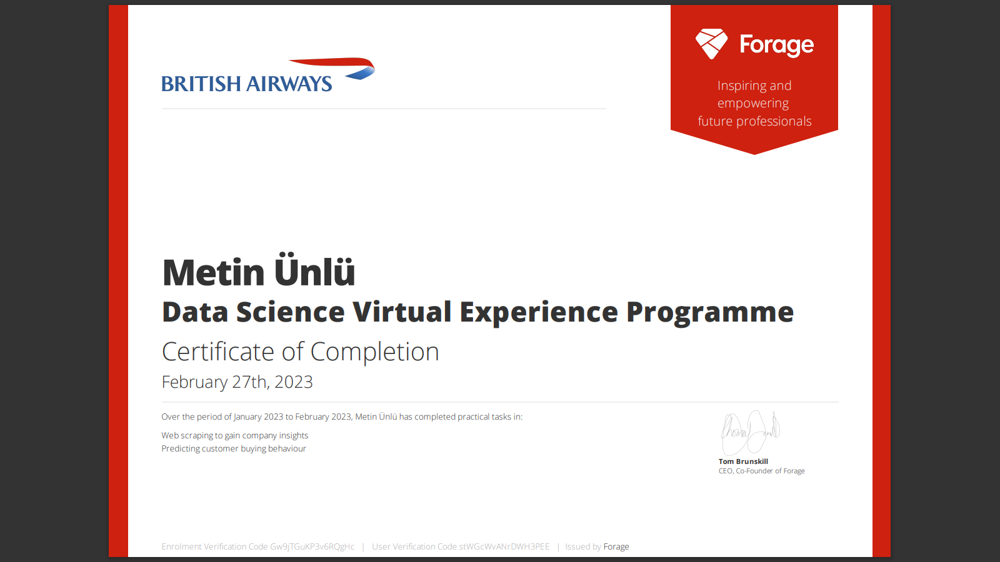

Certificates
Verified coursework



Chief Technology Officer · AI & Full-Stack Engineer
CTO and hands-on engineer who designs and ships production AI systems end to end — architecture, backend, machine learning, frontend and infrastructure. An MSc in Data Science (110 e lode, University of Verona) on top of a mechanical and robotics engineering background, which is why the systems I build are shaped by real industrial constraints: on-premise deployment, confidential data, auditable decisions.

